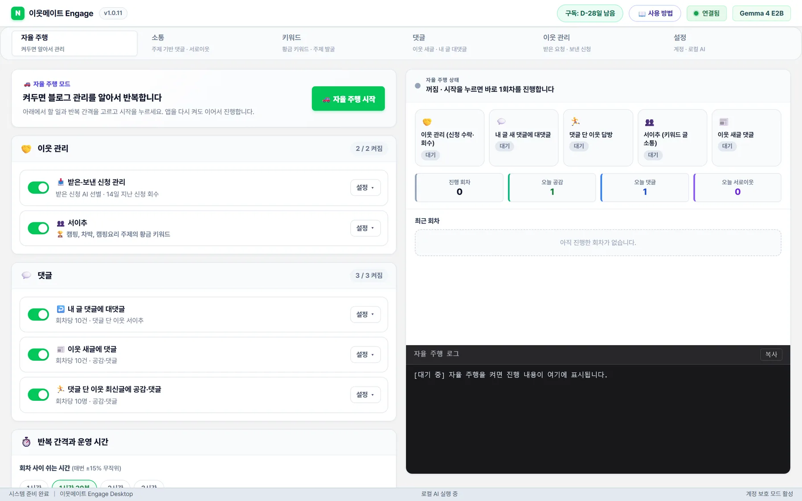
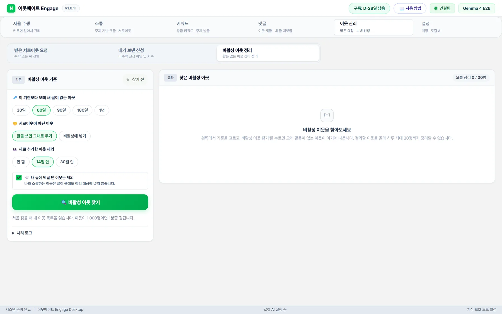
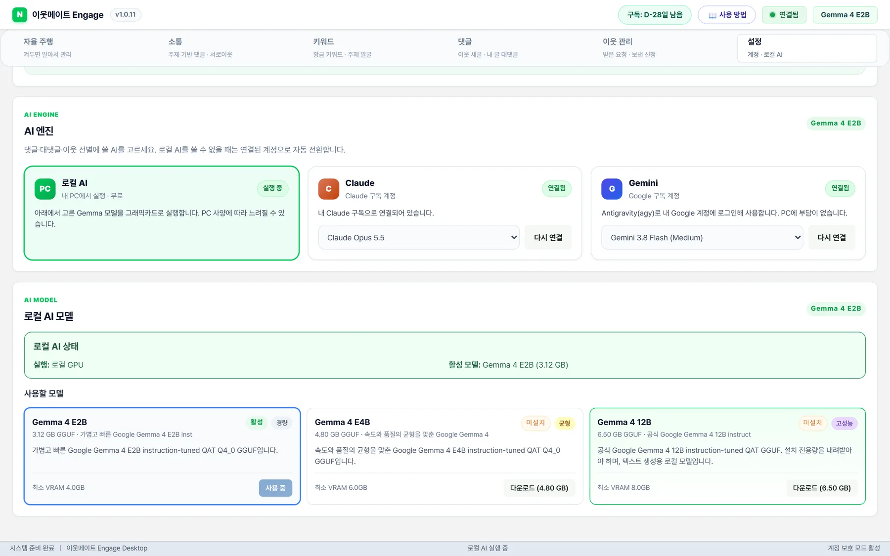
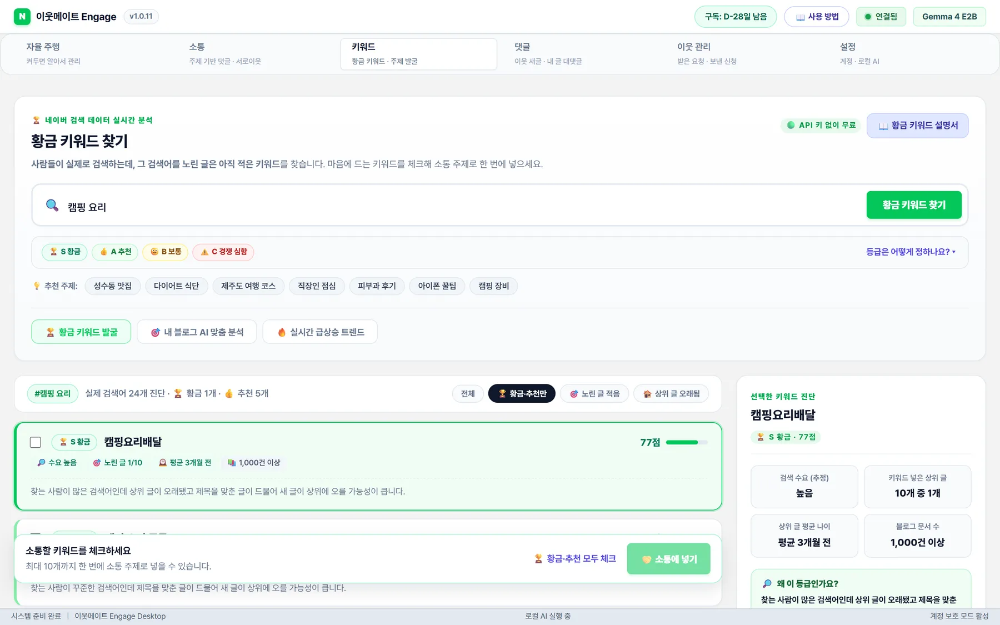
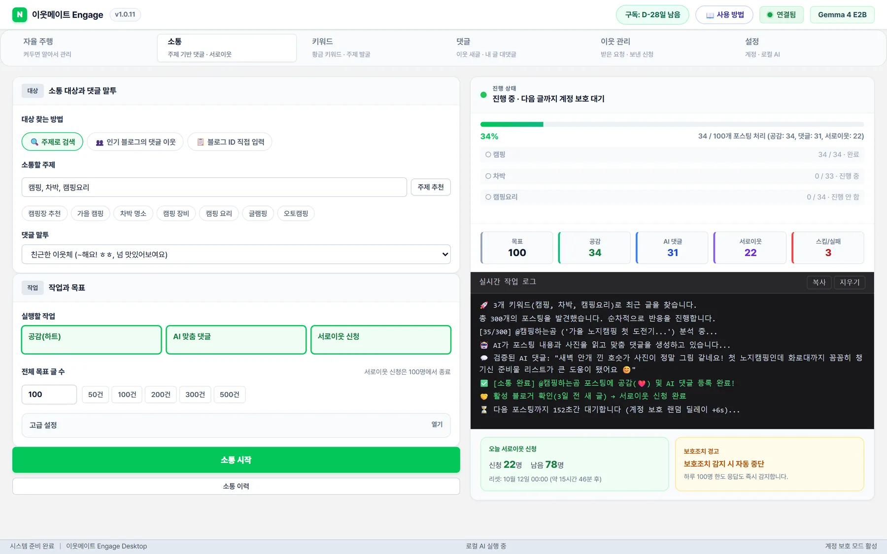

건강 정보 글환절기 목 통증 잡는 모과차 효능
🍵
환절기마다 목이 따끔거려서 고생하는데, 모과에 사포닌과 구연산이 풍부해서 염증을 가라앉혀준다는 정보가 정말 유익하네요. 특히 변비가 있는 분들은 탄닌 성분을 주의해야 한다는 꿀팁까지 챙겨주셔서 감사해요! 😊
사포닌·구연산탄닌 주의사항
글을 읽고 쓰는 맞춤 댓글, 진짜 블로거만 남기는 이웃 정리, 황금 키워드로 찾아가는 소통까지. AI는 내 PC에서 돌아가 AI 요금 0원, 사람 같은 속도로 움직여 계정은 안전하게 지킵니다.
설치 파일 1개 · 카드 등록 없이 이메일만으로 체험

이웃 5천 명이어도 글을 안 쓰는 이웃뿐이면 방문자도 댓글도 늘지 않습니다. 이웃메이트는 지금 활동하는 블로거만 남기고 들입니다.
신청자 블로그를 읽고, 글을 꾸준히 쓰는 진짜 블로거만 수락합니다. 광고·매크로 신청은 거절합니다.
최근 14일 안에 글을 쓴 블로거에게만 신청해 휴면·광고 블로그를 거릅니다.
60·90·180일 넘게 새 글이 없는 이웃을 찾아 정리합니다. 내 글에 댓글 단 이웃, 새로 추가한 이웃은 지킵니다.
14일 넘게 대기 중인 신청을 취소해, 대기 신청이 쌓여 새 신청이 막히는 일을 막습니다.

보호조치는 대개 ‘기계 같은 패턴’에서 시작됩니다. 너무 빠르고, 너무 일정하고, 너무 많고, 같은 말을 반복할 때. 이웃메이트는 그 반대로 움직입니다.
글 사이에 2~3분씩 무작위로 쉬고, 10건마다 10~20분 휴식합니다. 자율 주행 회차 간격도 매번 ±15% 바뀝니다.
랜덤 딜레이 + 묶음 휴식공감·댓글·서로이웃 신청이 하루 한도에 닿으면 다음 날까지 알아서 쉽니다.
공감 200 · 댓글 100 · 신청 100네이버가 보안 확인이나 자동입력 방지를 띄우면 그 순간 모든 작업을 멈춥니다. 무리해서 밀어붙이지 않습니다.
보호조치 감지 → 자동 중단아이디·비밀번호를 입력하지 않고 휴대폰 네이버 앱으로 QR을 찍어 로그인합니다. 비밀번호는 앱을 거치지 않습니다.
비밀번호 저장 안 함모든 댓글은 그 글을 읽고 새로 씁니다. 최근 쓴 댓글과 비슷하면 다시 쓰고, 이미 소통한 글은 다시 가지 않습니다.
복붙 댓글 0개운영 시간(예: 9시~23시)에만 움직이고, 밤에는 쉬었다가 아침에 다시 시작합니다.
운영 시간 · 휴식 시간 설정계정 길들이기 노하우 — 새 계정이나 오래 쉬던 계정은 처음 며칠간 하루 서로이웃 30~50명으로 시작해 조금씩 늘리세요. 프로그램 기본값은 이 원칙에 맞춰져 있어, 건드리지 않고 써도 안전한 쪽으로 동작합니다.
댓글 AI를 클라우드 API로 돌리면 쓸 때마다 요금이 쌓입니다. 이웃메이트는 Google Gemma 4 모델을 내 PC에서 직접 돌려, 아무리 많이 써도 추가 요금이 없습니다.
이미 Claude나 Gemini 구독이 있다면 버튼 한 번으로 연결해 쓸 수도 있습니다. 구독 요금 안에서 쓰므로 이 역시 건당 요금이 없습니다.

AI가 본문과 사진을 읽고 그 글에서만 나올 수 있는 이야기로 댓글을 씁니다. 받는 사람이 ‘진짜 읽었구나’ 느끼니 답방과 서로이웃 수락으로 이어집니다.
어느 글에나 붙일 수 있는 문장은 받는 사람도, 네이버도 바로 알아봅니다.
‘제사 시금치나물 레시피’ 글을 읽고 쓴 댓글. 본문의 대체 재료 팁을 정확히 짚었습니다.
환절기마다 목이 따끔거려서 고생하는데, 모과에 사포닌과 구연산이 풍부해서 염증을 가라앉혀준다는 정보가 정말 유익하네요. 특히 변비가 있는 분들은 탄닌 성분을 주의해야 한다는 꿀팁까지 챙겨주셔서 감사해요! 😊
5개월 아기가 자기 발목을 오밀조밀 잡고 꼼지락거리는 모습이 정말 사랑스러울 것 같아요. 단순한 장난이 아니라 소근육과 신체 인지 능력이 발달하는 소중한 과정이라는 설명이 큰 도움이 되네요! 😊
반포대교 달빛무지개분수를 요트 위에서 가장 가까운 각도로 볼 수 있다는 팁이 정말 유용하네요. 덕분에 서울 야경을 훨씬 로맨틱하게 즐길 수 있을 것 같아요! 😊
추억의 나나콘과 브이콘 영양성분까지 꼼꼼하게 비교해 주셔서 정말 유익하네요! 특히 나나콘의 옥수수 함량이 80%나 된다는 사실이 신기하고 맛있어 보여요. 😊
식사 시작 후 30분이라는 구체적인 타이밍을 짚어주셔서 혈당 관리에 정말 큰 도움이 될 것 같아요. 식후 운동의 중요성을 알게 된 유익한 정보네요! 😊
방문한 이웃포스팅 잘 보고 갑니다! 서이추 감사해요 :) 늦어도 답방 꼭 갑니다~
이웃메이트 AI 답글방문해주셔서 감사드리고, 서이추 수락해주셔서 기뻐요. 시간 되실 때 편하게 놀러 오세요 😊
위 댓글은 모두 이웃메이트가 실제 블로그 글을 읽고 작성한 댓글입니다. 말투는 친근한 이웃체 · 정중한 소통체 · 열정 칭찬형 중에서 고를 수 있습니다.
사람들이 실제로 검색하는데 노린 글은 아직 적은 키워드가 ‘황금 키워드’입니다. 글감으로 쓰면 상위 노출에 유리하고, 그 키워드로 글을 쓰는 블로거는 나와 관심사가 같은 최고의 이웃 후보입니다.
‘캠핑 요리’처럼 관심 주제를 넣으면 네이버 자동완성의 실제 검색어를 모아 진단합니다. API 키 없이 무료입니다.
검색 수요, 제목에 키워드를 넣은 상위 글 수, 상위 글의 나이로 등급을 매깁니다.
마음에 드는 키워드를 체크해 [소통에 넣기]를 누르면, 그 키워드로 글을 쓴 블로거에게 공감·AI 댓글·서로이웃 신청을 이어서 합니다.


할 일을 켜 두고 [자율 주행 시작]을 누르면 회차마다 순서대로 처리하고, 쉬는 시간이 지나면 다음 회차를 시작합니다. 창을 최소화해도 뒤에서 계속 돌고, 작업용 브라우저는 화면에 뜨지 않습니다.
설치 파일 하나로 끝납니다. 업데이트도 알아서 받아 옵니다.
설치 파일을 실행하면 바로 설치됩니다. 이메일로 계정을 만들면 3일 무료 체험이 시작됩니다.
휴대폰 네이버 앱으로 화면의 QR을 찍으면 연결 끝. 한 번 연결하면 계속 유지됩니다.
내 PC에 맞는 Gemma 모델을 버튼 한 번으로 받거나, 쓰던 Claude·Gemini 구독을 연결하세요.
어떤 도구도 보호조치를 100% 막는다고 약속할 수는 없습니다. 대신 이웃메이트는 보호조치를 부르는 패턴(빠른 속도, 일정한 간격, 과도한 건수, 같은 댓글 반복)을 처음부터 피하도록 설계했고, 네이버가 보안 확인을 요구하는 순간 모든 작업을 멈춥니다. 기본 설정을 그대로 두고, 새 계정은 적은 건수로 시작하는 것을 권합니다.
네. 로컬 AI는 내 PC에서 돌아가므로 몇 개를 써도 추가 요금이 없고 API 키도 필요 없습니다. Claude·Gemini를 연결하는 경우에도 이미 쓰고 있는 구독 안에서 쓰므로 건당 요금이 없습니다.
가장 가벼운 Gemma 4 E2B(3.1GB)는 일반 노트북과 내장 그래픽에서도 동작합니다. 설정 화면에서 내 PC에 맞는 모델을 추천해 드리고, 사양이 부족하면 Claude·Gemini 구독을 연결해 PC 부담 없이 쓸 수 있습니다.
아니요. 휴대폰 네이버 앱으로 QR을 찍어 로그인하므로 비밀번호를 입력하거나 저장하지 않습니다. 로그인 정보는 내 PC에만 남습니다.
자율 주행은 PC와 프로그램이 켜져 있는 동안 동작합니다. 다시 켜면 이어서 진행합니다. 창을 최소화해도 계속 돌아가고, 작업용 브라우저는 화면에 뜨지 않습니다.
3일 체험이 끝나면 작업이 멈추고, 구독 이용권 키를 등록하면 바로 이어서 쓸 수 있습니다. 그동안의 기록과 설정은 그대로 남습니다. 이용권은 PC 한 대에 연결되며, 무료 체험은 PC당 한 번입니다.
자동입니다. 새 버전이 나오면 프로그램이 뒤에서 받아 두고 상단에 알려 드립니다. 버튼을 누르거나 프로그램을 닫으면 설치됩니다.